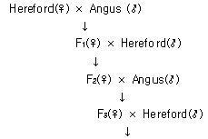
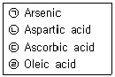
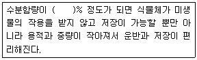
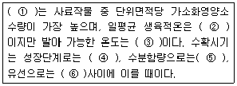
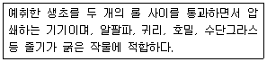
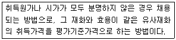

축산기사 (2010-05-09 기출문제)
1과목: 가축육종학
1. 멘델의 독립의 법칙에서 F2의 표현형이 8종류로 출현되는 경우는?
- 단성잡종
- 양성잡종
- 3성잡종
- 4성잡종
(정답률: 75%)

2. 유우의 경제형질 중 비유량의 유전력은 얼마인가?
- 0~0.1
- 0.2~0.3
- 0.4~0.6
- 0.7~0.9
(정답률: 70%)
3. 경산돈의 모돈생산능력자수(SPI) 산출과정에 대한 설명으로 옳지 못한 것은?
- 모돈이 분만한 산자수를 사산, 미이라 및 기형 등을 포함한 복당 총산자수를 조사한다.
- 가능한 경우 위탁포유를 통해 복당 포유개시두수를 6~12두가 되게 한다.
- 생후21일령에 모돈이 육성한 한배새끼의 수와 한배새끼돼지의 체중을 측정한다.
- 한배새끼의 전체 체중을 생후 21일령에 측정하지 못하면 보정계수로 통계 보정한다.
(정답률: 77%)
4. 닭에 있어서 우성의 반성유전자인 B는 검은색에 흰 횡반이 나타나게 한다. 동형 접합체인 횡반의 수탉에 횡반이 아닌 흑색 암탉을 교배시켰을 때에 잡종 1대에서 수탉의 색깔은?
- 전부가 흑색이다.
- 전부가 흰색이다
- 전부가 횡반이다.
- 횡반1:흑색1이다.
(정답률: 60%)
5. 염색체의 이수현상을 틀리게 표현한 것은
- 영염색체적:2n-2
- 단염색체적:2n-1
- 4염색체적:2n+1
- 2중3염색체적:2n+1+1
(정답률: 73%)
6. 돼지의 다음 경제형질 중에서 유전력이 가장 낮은 것은?
- 체장
- 복당 산자수.
- 등지방 두께
- 배장근 단면적
(정답률: 86%)
7. 잡종강세를 이용하기 위해 특정 계통을 다른 계통과 교배시켜 얻은 자손에 다한 능력의 좋고 나쁨을 조합 능력이라고 한다. 다음 중 조합능력을 개량하기 위하여 고안된 육종방법은?
- 상반반복선발
- 선발지수
- 계통조성
- 상호역교배
(정답률: 65%)
8. X형질과 Y형질의 유전분산은 각각 4.0 및 9.0이며 이들 두 형질간 유전공분산은 3.0이다 이들 두 형질간 유전상관은?
- 0.4
- 0.5
- 0.6
- 0.7
(정답률: 73%)
9. 다음 중 Hardy-Weinberg 평형을 이루는 조건을 설명한 것은?
- 작은 규모의 집단에서만 H-W평이 이루어진다.
- 선발이나 돌연변이 같은 유전자변동 요인이 없다.
- 동류교배가 이루어져야 한다.
- 가급적 근친교배가 이루어 져야 한다.
(정답률: 77%)
10. 다음과 같은 방식의 잡종교배방법은?

- 3원 종료 교배
- 3원 종료 윤환 교배
- 3원 윤환 교배
- 상호 역교배
(정답률: 69%)
11. 3원 교잡이란 무엇인가?
- 2품종간 교배에 의하여 각각 생산된 f1 암컷과 f1수컷을 교배시키는 것
- 각 구룹에서 대체축으로 남아있는 암컷의 아비를 조사하여 아비와 반대의 품종인 수컷으로 교배시키는 것
- 2개의 춤종간 2원 교잡으로 태어난 자식을 어미로 하여 여기에 제3의 품종의 수컷을 교배 시키는 것
- 서로 다른 두 품종간 또는 계통간의 교배에 의하여 생산 되는 1 대잡종을 실용축으로 활용한고 이들은 번식에 이용하지 않는 것
(정답률: 87%)
12. 한우 송아지 이유시 체중과 밀접한 관계가 있는 것은?
- 생시 체중
- 어미의 분만능력
- 어미의 비유 능력
- 송아지의 성질
(정답률: 74%)
13. 선발지수 법을 올바르게 설명한 것은?
- 육종가를 중심으로 개량 순서를 정하여 개량하는 법이다 .
- 대상 형질별 육종가의 기준치를 정하여 만족하는 개체만 선발하는 방법이다.
- 다수의 형질을 개량할 경우에 대상 형질의 경제적 가치를 감안하여 선발하는 방법이다.
- 하나의 형질을 개량할 경우에 그 형질과 연관이 많은 형질을 개량 하는 방법이다.
(정답률: 63%)
14. 다음중 DNA에는 없고 RNA에만 존재하는 질소염기는?
- Uracil
- Adenine
- Guanine
- Cytosine
(정답률: 88%)
15. 콜히친의 임계농도에서 방추사가 형성 되지 않는 세포분열 과정이 일어나는데 이를 무엇이라 하는가?
- 마이오시스
- 씨-마이오시스
- 마이토시스
- 씨- 마이토시스
(정답률: 56%)
16. 우성 백색인 Leghorn종 닭(IICC)과 열성백색인 PlymouthRock종 닭(iicc) 사이에 태어난 F1간의 교배에 의해 부화된 400마리의 F2병아리 중에서 백색인 것은 몇 마리인가?
- 25
- 75
- 225
- 325
(정답률: 56%)
17. 수컷 3두, 암컷 100두인 폐쇄집단을 무작위 교배매세대 유지할 때 근교계수가 매세대 상승하는 정도는 얼마인가?
- 2%
- 4%
- 6%
- 8%
(정답률: 43%)
18. A, B, C, D 육우 축군에 있어 체중의 평균값은 동일하나, 이의 분산 값이 각각 150, 100, 50, 10 이라면 어느 축군이 보다 균일화 되었다고 할 수 있는가?
- A
- B
- C
- D
(정답률: 81%)
19. 돼지육종에 있어 개량하고자 하는 경제형질이 아닌 것은?
- 복당 산자수
- 이유시 체중
- 포유시 비유량
- 사료효율
(정답률: 78%)
20. 돼지의 능력검정에 대한 설명으로 틀린 것은?
- 종돈으로 쓰일 돼지 자체의 능력을 기준으로 한다.
- 혈통에 따라 사양관리 환경에 차이를 둔다.
- 후대검정에 비해 시설과 비용이 적게 든다.
- 돼지의 능력검정소를 설치하여 검정하기도 한다.
(정답률: 70%)
2과목: 가축번식생리학
21. 사출된 정자의 생존성과 운동성에 결정적인 영향을 미치는 요소가 아닌 것은?
- 호르몬
- 전해질
- 삼투압
- pH
(정답률: 65%)
22. 다음 중 임신 후 난자의 투명대 소실시기가 틀린 것은?
- 토끼 : 교미 후 5일
- 돼지 : 발정개시 후 8일
- 면양 : 교미 후 8일
- 소 : 배란 후 10~11일
(정답률: 39%)
23. 다음 중 소의 정자형성에 관한 설명으로 틀린 것은?
- 정조(정원)세포가 정자세포로 발달하는 소의 경우 약 8개월이 소요된다.
- 정자세포는 핵염색질의 농축. 정자의 미부의 발달과 같은 정자관성 과정을 거쳐 정자가 된다.
- 제1정모세포에서 제2정모세포가 되는 과정에서 감수분열이 일어난다.
- 정자는 정자형성이라는 특수한 과정에 의거 세정관 상피에서 만들어진다.
(정답률: 68%)
24. 프리마틴이 갖는 특징의 설명으로 적절하지 않은 것은?
- 중간적인 양성의 생식기관을 갖는다.
- 정상적인 암컷과 비슷한 외부생식기를 갖는다.
- 정소와 여러 가지 유사점을 가진 변이한 난소를 갖는다.
- 생식선은 골반강까지 내려오는 경우가 많다.
(정답률: 74%)
25. 자궁을 형태적으로 분류할 때 쌍각자궁에 해당하는 동물은?
- 집토끼
- 돼지
- 소
- 원숭이
(정답률: 84%)
26. 다음 중 발정한 암퇘지의 배란시기로 옳은 것은?
- 수퇘지를 허용하기 시작 시점으로부터 12~24시간 사이이다.
- 수퇘지를 허용하기 시작 시점으로부터 30~35시간 사이이다.
- 수퇘지를 허용하기 시작 시점으로부터 50~65시간 사이이다.
- 수퇘지를 허용하는 것과 수정시기와는 별개 문제이다.
(정답률: 58%)
27. 다음 중 가축의 번식에 직접 관여하는 호르몬들을 분비하는 기관들만을 묶어놓은 것은?
- 뇌하수체, 사구체, 정소
- 사구체, 정소, 난소
- 정소, 뇌하수체, 난소
- 난소, 뇌하수체, 사구체
(정답률: 82%)
28. 소의 난자가 배란된 후 수정능력을 유지할 수 있는 최대의 시간은?
- 6시간 이내
- 12~24시간
- 30~42시간
- 48~60시간
(정답률: 75%)
29. 포유가축에서 모자간 일어나는 흡유 행동의 자극이 아닌 것은?
- 촉각
- 시각
- 미각
- 청각
(정답률: 69%)
30. 소의 분만시 파수현상의 순서와 파괴되는 막을 바르게 설명한 것은?
- 제 1파수 - 요막, 제 2파수 - 양막
- 제 1파수 - 융모막, 제 2파수 - 양막
- 제 1파수 - 융모막, 제 2파수 - 요막
- 제 1파수 - 양막, 제 2파수 - 융모막
(정답률: 74%)
31. 주요 가축의 번식적령기를 결정하는 주요 원인은?
- 온도와 위도
- 월령과 체중
- 계절과 일조시간
- 집단의 개체수
(정답률: 82%)
32. 소에서 prostaglandin의 중요한 기능으로 맞는 것은?
- 황체형성
- 임신유지
- 프로게스테론 분비 촉진
- 자궁근육 수축
(정답률: 68%)
33. 정자의 수정능력 획득과 관련한 내용 중 틀린 것은?
- 암가축의 생식기관의 분비액 중에서 수정능력 획득인자가 함유되어 있다.
- 수정능력 획득인자를 정자피복항원이라 한다.
- 정자의 수정능력 획득작용은 난소호르몬의 영향을 받는다.
- 수정능력 획득에 수반되는 정자의 형태 변화는 첨체반응으로 나타난다.
(정답률: 60%)
34. 포유류 난관의 구성순서가 옳은 것은?
- 난관체→ 난관누두부 → 난관팽대부 → 난관협부 → 자궁
- 난관누두부→ 난관채 → 난관팽대부 → 난관협부 → 자궁
- 난관채→ 난관누두부 → 난관협부 → 난관팽대부 → 자궁
- 난관누두부→ 난관채 → 난관협부 → 난관팽대부 → 자궁
(정답률: 60%)
35. 하나의 제1정모세포는 몇 개의 정자로 발달하는가?
- 1개
- 2개
- 3개
- 4개
(정답률: 76%)
36. 발정주기 동기화의 장점이 아닌 것은?
- 분만관리와 자축관리가 용이하다.
- 계획번식과 생산조절이 가능하다.
- 전문지식과 숙련된 기술이 필요하다.
- 발정의 발견과 교배적기 파악이 용이하다.
(정답률: 74%)
37. 하나의 난모세포는 몇 개의 난자로 발달하는가?
- 1개
- 2개
- 3개
- 4개
(정답률: 79%)
38. 유선발육에 관여하지 않는 호르몬은?
- 난포호르몬(estrogen)
- 황체호르몬(progesterone)
- 프로락틴(prolactin)
- 옥시토신(oxytocin)
(정답률: 60%)
39. 다음 중 뇌하수체 전엽에서 분비되는 성선자극호르몬은?
- 옥시토신(oxytocin)
- 난포자극호르몬(folliclestimulating hormone)
- 황체호르몬(progesterone)
- 프로스타글란딘(prostaglandin)
(정답률: 74%)
40. 젖소의 난소에서 난포가 발육되지 않아 무발정이 계속될 때 치료제로서 가장 적합한 호르몬은?
- Progesterone
- prostaglandin F2α
- prolactin
- PMSG
(정답률: 50%)
3과목: 가축사양학
41. 팔미트산이 체내에서 완전히 산화되면 에너지 효율은 약 얼마인가?(단, 필미트산 → 2,320kcal/몰)
- 40%
- 30%
- 20%
- 10%
(정답률: 66%)
42. 다음 가용무질소물 중 이당류에 해당하는 것은?
- Maltose
- Glucose
- Galactose
- Mannose
(정답률: 63%)
43. 간으로부터 분비되는 담즙산의 중요한 기능이 아닌 것은?
- 유화작용으로 지방의 소화를 억제한다.
- 췌장에서 분비되는 리파제를 활성화 한다.
- 지방산, 콜레스테롤, 비타민 A, D 와 카로틴의 흡수를 돕는다.
- 담즙의 분비와 교류를 자극한다.
(정답률: 72%)
44. 자돈의 빈혈 방지와 가장 거리가 먼 것은?
- Na
- Fe
- Co
- Cu
(정답률: 65%)
45. 다음 중 식물성 사료에서 인 의 이용에 방해되는 형태의 물질은?
- Trypsin inhibitor
- Phytate
- Cholecystokinin
- 1,25-dihydroxy cholecalciferol
(정답률: 58%)
46. 산란계사에 산란 직전의 대추를 10000수 입식하였는데 현재 9000수가 생존하여 1일 8000개의 계란을 생산하고 있다. 이 계군의 헨하우스(hen-housed) 산란지수는?
- 80.0%
- 88.9%
- 92.0%
- 95.0%
(정답률: 60%)
47. 다음 소화율을 설명한 것 중 틀린 것은?
- 반추동물과 비반추 초식동물은 조사료에 대한 소화율이 높다.
- 단위동물은 농후사료에 대한 소화율이 높다.
- 대체적으로 재래종은 개량종보다 같은 영양소에 대한 소화율이 우수하다.
- 같은 영양소는 사료의 종류에 따라 소화율이 달라지지 않는다.
(정답률: 64%)
48. 신생 자돈의 환경에서 적온은 몇 도인가?
- 30℃ 정도
- 20℃ 정도
- 15℃ 정도
- 10℃ 정도
(정답률: 79%)
49. 사일로의 형태별로 초종별 추천 수분함량이 다른데, 탑형사일로에서 유선 1/2~2/3기의 옥수수의 추천 수분함량으로 가장 적당한 것은? (단, 세절길이는 3/8~1/2로 한다.)
- 40~50%
- 45~50%
- 55~60%
- 63~68%
(정답률: 50%)
50. 다음 중 닭의 영양소요구량에서 고려하여야 하는 미량광물질로만 맞게 짝지어진 것은?
- Zn, Cd, Fe, Ca
- Mn, Hg, Fe, Se
- Mn, Fe, I, Se
- Mn, S, Co, Zn
(정답률: 70%)
51. 다음 중 활성흡수에 의해 흡수되는 영양소는?
- 프락토스(fructose)
- 만노스(mannose)
- 포도당(glucose)
- 리보스(ribose)
(정답률: 71%)
52. 다음 아미노산 중 필수아미노산이 아닌 것은?
- glutamic acid
- methionine
- lysine
- tryptophan
(정답률: 70%)
53. 브로일러 종계의 체중조절을 위해서는 계군 평균 체중 조사를 2주령 ~ 초산시까지 매주 측정을 실시해야 하는데, 계군의 평균체중의 균일성을 알기 위해 사용하는 방법 중 변이계수를 구하는 공식이 있다. 다음중 맞는 것은?
- 표준편차/평균체중 X 100
- 표준편차/(평균체중 - 표준오차) X 100
- 표준편차/(최고체중 - 평균체중) X 100
- 표준오차/평균체중 X 100
(정답률: 52%)
54. 반추동물에 있어서 다음 곡류 중 대사열량(ME)함량이 가장 많은 것은?
- 옥수수
- 보리
- 수수
- 트리티케일
(정답률: 76%)
55. 체중 120kg인 후보모돈 돈방의 정당한 여름철 환기량은?
- 2.83m3
- 3.40m3
- 5.09m3
- 7.08m3
(정답률: 55%)
56. 다음 중 단백질 분해 생성물과 분해효소가 바르게 연결된 것은?
- 아미노산 - Cellulase
- 지방산 - Lipase
- 아미노산 - Pepsin
- 지방산 - Amylase
(정답률: 61%)
57. 다음 [보 기]의 영양소를 바르게 골라 나열한 것은?

- 아미노산 : ㉢, 비타민 : ㉡, 지방산 : ㉠,미네랄 : ㉣
- 아미노산 : ㉡, 비타민 : ㉢, 지방산 : ㉣,미네랄 : ㉠
- 아미노산 : ㉢, 비타민 : ㉡, 지방산 : ㉣,미네랄 : ㉠
- 아미노산 : ㉡, 비타민 : ㉢, 지방산 : ㉠,미네랄 : ㉣
(정답률: 72%)
58. 다음 중 동물성 단백질 급원사료라고 볼 수 없는 것은?
- 골분
- 혈분
- 피혁분
- 우모분
(정답률: 61%)
59. 단백질함량이 10%인 곡류와 36%인 농축사료를 가지고 16%(단백질)인 양돈사료를 100kg 제조하는데 곡류와 농축사료의 배합비율이 적당한 것은?
- 곡류 30kg + 농축사료 70kg
- 곡류 23kg + 농축사료 77kg
- 곡류 20kg + 농축사료 30kg
- 곡류 77kg + 농축사료 23kg
(정답률: 68%)
60. 반추위 내에서 미생물이 비타민 B12를 활성할 때 꼭 필요한 무기물은?
- 철(Fe)
- 구리(Cu)
- 코발트(Co)
- 황(S)
(정답률: 78%)
4과목: 사료작물학 및 초지학
61. 다음 ( )안에 적합한 숫자는?

- 15
- 25
- 35
- 45
(정답률: 76%)
62. 사료작물의 기상 생태학적 분류에서 난지형 작물에 속하는 것들로만 짝지어진 것은?
- 오처드그라스, 티머시, 톨페스큐
- 호밀, 귀리, 보리
- 자운영, 헤어리벳치, 이탈리안 라이그라스
- 수단그라스, 수수, 옥수수
(정답률: 65%)
63. 초지조성시 불경운초지 개량이 경운초지 개량에 비해서 유리한 점이 아닌 것은?
- 조성시 파종 비용이 적게 든다.
- 초지의 목양력 증가가 빠르다.
- 토양침식 위험이 적고 토양유실이 적다.
- 1년생 잡초의 침입을 줄여 준다.
(정답률: 60%)
64. 초지에서 양호한 재생과 식생유지를 고려한 예취높이는 오처드그라스 위주의 혼파초지에서는 어느 정도 높이가 가장 적당한가?
- 2cm
- 6cm
- 13cm
- 15cm
(정답률: 56%)
65. 두과목초 종자의 근류균 접종으로 절감할 수 있는 비료 성분은?
- 질소
- 인산
- 칼륨
- 마그네슘
(정답률: 81%)
66. 원형곤포를 이용한 비닐 랩 사일리지 조제시 작업 단계가 순서대로 나열된 것은?
- 예취 → 집초 → 곤포 → 비닐감기 → 개별저장
- 예취 → 곤포 → 비닐감기 → 집초 → 개별저장
- 곤포 → 예취 → 집초 → 비닐감기 → 개별저장
- 곤포 → 예취 → 비닐감기 → 집초 → 개별저장
(정답률: 77%)
67. 여름철 북방형 화본과목초에서 흔히 볼 수 있는 하고현상과 가장 관련이 있는 생리적 현상은?
- 굴광작용
- 호흡작용
- 질소고정작용
- 증산작용
(정답률: 60%)
68. 북방형(한지형)목초의 생육 적온은?
- 5~10℃
- 10~15℃
- 15~21℃
- 25~30℃
(정답률: 46%)
69. 일반적으로 오처드그라스를 채초용으로 단파 할 때 ha당 가장 적당한 파종량은?
- 5~10kg 정도
- 17~25kg 정도
- 30~35kg 정도
- 45~50kg 정도
(정답률: 64%)
70. 호밀(호맥)을 사일리지로 만들 때 수확은 어느 시기에 하는 것이 가장 좋은가?
- 생육초기 ~ 수잉기
- 개화기 ~ 유숙기
- 호숙기 ~ 황숙기
- 황숙기 ~ 완숙기
(정답률: 58%)
71. 중부지방에서 양질조사료의 다수확을 위한 1년 중 사료 작물의 작부체계는 어떠한 형태가 가장 적당한가? (단, 이용 시기를 중심으로 선행한 작물이 먼저 재배하는 작물이다.)
- 호밀-옥수수
- 호밀-유채-옥수수
- 피-수단그라스-옥수수
- 옥수수-수단그라스
(정답률: 54%)
72. 다음 설명의 괄호 안에 들어가야 할 내용이 올바르게 짝지어진 것은?(순서대로 ①, ②, ③, ④, ⑤, ⑥)

- 옥수수, 22℃, 10℃, 황숙기, 70%, 1/3~2/3
- 옥수수, 22℃, 5℃, 유숙기, 50%, 1/3~2/3
- 호밀, 22℃, 10℃, 황숙기, 70%, 1/3~2/3
- 호밀, 22℃, 5℃, 유숙기, 50%, 1/3~2/3
(정답률: 82%)
73. 다음 목초 및 사료작물 중 단위면적당 단백질 생산수량이 가장 높은 종류는?
- 옥수수
- 수단그라스
- 화이트클로버
- 알팔파
(정답률: 65%)
74. 옥수수 파종시 10a 당 성분량으로 20kg 의 질소비료를 줄 경우 이 양은 요소로는 얼마만 한 양에 해당하는가?
- 21.7 kg 정도
- 43.5 kg 정도
- 5.2 kg 정도
- 87.0 kg 정도
(정답률: 60%)
75. 옥수수사일리지를 제조하려고 하는데 재료의 수분이 너무 많을 경우 수분 조절방안으로 적합한 것은?
- 벤 직후 바로 사일로에 충전한다.
- 재료의 절단길이를 짧게 한다.
- 재료 충전시 밀기울을 섞는다.
- 요소를 첨가한다.
(정답률: 71%)
76. 사일리지 발효에 관여하는 미생물 중 저장성을 향상시키고 pH를 낮추어 주는 유익한 균은?
- 이스트(Yeast)
- 크로스트리디아(Clostridia)
- 젖산균(Lactic acid bacteria)
- 곰팡이(Mold)
(정답률: 81%)
77. 건초 조제시 손실이 가장 적을 것으로 예상되는 것은?
- 건초 조제 기간 중에 비를 맞을 경우
- 호흡에 의한 손실
- 잎의 탈락에 의한 손실
- 부패에 의한 손실
(정답률: 61%)
78. 다음에서 설명하는 기계는 무엇인가?

- 테더(Tedder)
- 헤이 컨디셔너(hay conditioner)
- 레이크(Rake)
- 포레이지 하베스터(Forage harvester)
(정답률: 64%)
79. 방목지에 목책을 사용하여 몇 개의 목구를 분할하고 각 목구에 일정기간 머무르면서 채식하여 모든 목구를 한 차례 회전하면 다시 처음 목구로부터 방목을 하는 집약적 방목법은?
- 연속방목
- 계목
- 윤환방목
- 순차방목
(정답률: 69%)
80. 하고현상을 방지하기 위한 대책이 될 수 없는 것은?
- 여름철 생육불량기에 관개를 한다.
- 고온기 이전에 낮게 풀을 베어준다.
- 고온기에는 방목을 피한다.
- 남방형 목초를 초지를 조절한다.
(정답률: 48%)
5과목: 축산경영학 및 축산물가공학
81. 우리나라 축산의 당면과제라고 볼 수 없는 것은?
- 축산물 생산의 차별화 및 고급화
- 비용의 절감
- 경여의 내부화 촉진
- 각종제도의 보완
(정답률: 75%)
82. 생산량의 증감과 무관하게 지불되는 비용은?
- 가변비용
- 고정비용
- 총비용
- 평균비용
(정답률: 81%)
83. 도시근교 낙농과 도시원교 낙농의 차이를 성명한 것이다. 부적절한 것은?
- 도시근교 낙농에서는 지가, 노임, 조사료비 등이 높다.
- 도시근교 낙농에서는 농후사료비는 낮다.
- 도시원교에서는 지가와 노임이 싸다.
- 도시원교에서는 조사료 조달이 어렵다.
(정답률: 57%)
84. 축산경영인의 역할에 포함되지 않는 것은?
- 축산물 판매
- 축산자재 구입
- 가계비의 조달 및 지출
- 축산경영 성과분석 및 계획 수립
(정답률: 49%)
85. 자산평가액을 내용년수의 합계로 나누고 이것에 그 연수의 역을 곱해서 각 연도의 상가액을 구하는 감가계산법은?
- 급수법
- 직선법
- 잔액법
- 비례법
(정답률: 71%)
86. 주어진 생산자원으로 동일한 생산과정에서 둘 이상의 생산물(Y1, Y2)이 생산될 때, 이들 생산물은 어떤 관계인가?
- 결합관계
- 보완관계
- 경합관계
- 보합관계
(정답률: 65%)
87. 다음 주요 진단지표의 계산 방식 중 틀린 것은?
- 소득율 = (소득 / 조수입) X 100
- 유사비 = (구입사료비 / 유대) X 100
- 사료요구율 = 축산물생산량 / 사료급여량
- 노동생산성 = 소득 / 노동투입량
(정답률: 63%)
88. 쇠고기 1kg을 생산하기 위하여 8.9kg의 사료량이 필요하다는 것은 축산경여의 일반적 특징 중 어느 것에 해당하는가?
- 간접적 토지관계
- 3차적 생산의 성격
- 물량감소의 성격
- 생산물의 저장
(정답률: 59%)
89. 다음 축산경영조직의 결정조건 중 사회적 조건과 거리가 먼 것은?
- 국민의 식습관
- 과학기술의 발달
- 축산에 관한 정책
- 시장의 대소와 그 질
(정답률: 47%)
90. 다음 중 자본재 평가방법이 아닌 것은?
- 취득원가법
- 이동평균법
- 시가평가법
- 추정가평가법
(정답률: 73%)
91. 축산경영자가 의사결정을 하는 과정에서 마지막으로 취해야 할 사항은?
- 목표의 결정
- 관련 정보의 수집 및 관찰
- 최선의 대안 선택
- 실행한 행동에 대한 책임 감수
(정답률: 79%)
92. 다음 중 비육우경영의 조수익을 증대시키는 방법이 아닌 것은?
- 송아지 판매두수를 늘린다.
- 송아지 판매단가를 높인다.
- 송아지 사료비를 절감한다.
- 기간내 송아지 생산효율을 높인다.
(정답률: 52%)
93. 한계생산비란 무엇인가?
- 총생산비를 총생산량으로 나눈 것이다.
- 평균 생산비와 같다.
- 최저의 생산비이다.
- 생산물 한단위 추가생산에 소요되는 생산비이다.
(정답률: 65%)
94. 다음 설명은 고정 자본재의 어떤 평가방법인가?

- 임대가격에 의한 평가
- 매매가격에 의한 평가
- 추정가격에 의한 평가
- 수익가에 의한 평가
(정답률: 83%)
95. 낙농경영에서 젖소의 감가상각비(정액법)를 계산하는 공식은?
- 젖소 구입가격 - 폐우가격 / 내용년수
- 젖소의판매가격 / 내용년수
- 젖소의 판매가격 - 폐우가격 / 사육년수
- 젖소 구입가격 + 폐우가격 / 사육년수
(정답률: 67%)
96. 한우 번식경영에 관한 설명으로 틀린 것은?
- 사육규모가 영세하다.
- 적당한 운동이 필요하다.
- 번식간격의 단축이 과제이다.
- 농후사료를 많이 급여하여야 한다.
(정답률: 76%)
97. 축산경영 농가에 대한 진단시 경영실험농장 혹은 시험장의 성적과 비교 판단하는 경영진단 방법을 무엇이라고 하는가?
- 표준 비교법
- 직접 비교법
- 시계열 비교법
- 계획대비 실적 비교법
(정답률: 63%)
98. 다음 생산비의 내용 중에서 고정비인 것은?
- 트랙터의 감가삼각비
- 농후사료 구입비
- 깔짚 구입비
- 고용 노동비
(정답률: 73%)
99. 다음 중 축산경여에서 유동자본재가 아닌 것은?
- 사료
- 축사
- 비료
- 육계
(정답률: 77%)
100. 육계에 대한 사료급여량(X)과 출하시의 체중(Y)과의 관계가 Y = 1+0.5X-0.25X2 이고, 육계용 사료가격 (Px)이 kg당 250원, 육계출하가격(Py)이 kg당 1000원이라면, 수익이 최대가 되는 사료투입수준은?
- 0.5
- 1.0
- 1.5
- 2.0
(정답률: 51%)
그리고 이 중에서 "3성잡종"이라는 답안이 정답인 이유는, 단성잡종과 양성잡종은 각각 F1 세대에서 나타나는 표현형의 수에 따라 구분되는 용어이며, 4성잡종은 F2의 표현형이 4종류인 경우를 의미합니다. 따라서, F2의 표현형이 8종류인 경우에는 3성잡종이라는 용어를 사용합니다.